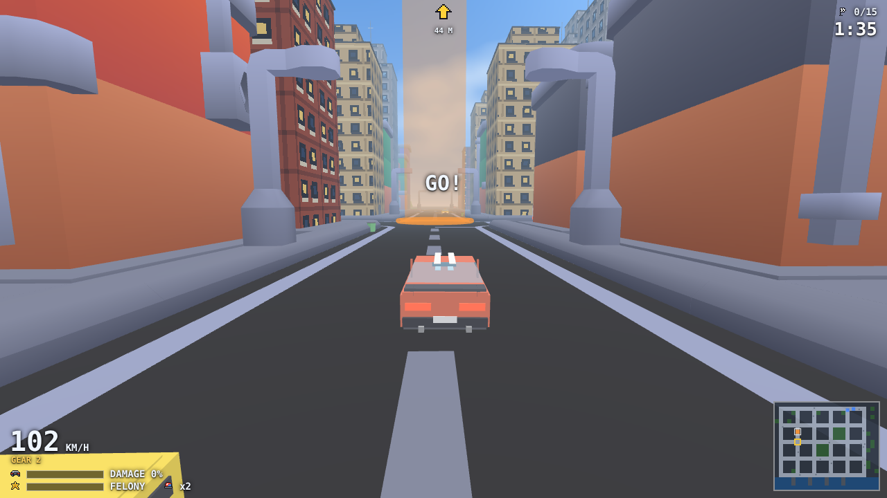

3D games
A 3D scene needs something to look at and a camera to see it. Nord components create the models, materials and lights in Babylon for you.
3D projects ("type": "3d") run on Babylon.js with Havok physics. Units are metres, y up, left-handed; rotation is Euler degrees (XYZ).
Building blocks#
mesh— box, sphere, cylinder, capsule, torus, plane, ground. Perfect for greyboxing.model— a glTF/GLB. Models are instanced; animations are named clips (play('walk')).material— PBR:color,metallic,roughness, textures,emissive,alpha,unlit.light— directional (sun), point, spot, hemispheric (ambient sky).castShadowson a directional/spot light enables shadows for everything withcastShadow.skybox— cube map folder (assets/skybox/day,sunset,nightship with the engine).postProcess— bloom, FXAA/MSAA, vignette, tonemap, grain.particles— Babylon particle system with the same component name as 2D.
Material assets#
A *.mat.json file in assets/ (Assets ▸ Create ▸ Material) is a shared material: color, metallic, roughness, texture, normalMap, emissive, emissiveMap (a picture that glows), alpha, uvScale, uvOffset, doubleSided, unlit. Select the file to edit it in the Inspector (with a quick preview), and point a material component's asset field at it; every mesh using it shares the values. Image import settings (Inspector on a selected image): filter nearest for crisp pixels and wrap clamp, stored in the sidecar <image>.meta.json.
Cameras#
A camera entity creates a Babylon camera: type: "orbit" (follows follow, optional mouse control) or a free camera attached to the entity (first person: put the camera as a child of the player body).
Switch with getComponent('camera').activate(). Library: fps3d.js, third-person3d.js, orbit-cam.js, fly-cam.js, rts-cam.js.
Animation#
model.play(name, { loop, speed }). Clip names come from the glTF; getComponent('model').animations lists them. Blend by switching clips with short tweens on speed if you need to.
The Kenney pack in assets/packs/kenney-platformer-3d/ has a rigged character to experiment with (Assets).
3D UI#
Use the DOM layer (game.ui, see UI) for HUDs. For labels floating above entities, game.gui.worldLabel(entity, 'Bob') (Babylon GUI).
Picking and rays#
game.physics.raycast(from, to, { ignore }) returns the first physics hit with the entity. The library has interact-ray.js and physics-hitscan.js.
Performance tips#
Reuse materials and models (instancing is automatic), keep shadow map size modest (1024 default), prefer one directional light with shadows, and use postProcess sparingly on laptops.
See Performance.
A real 3D scene#
